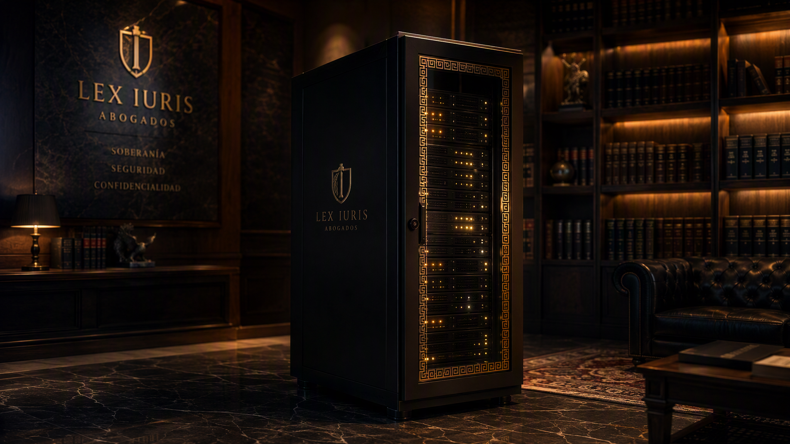

El LLM jurídico de México Agendar pilotoTlamatini es el primer LLM entrenado exclusivamente con fuentes primarias del derecho mexicano — más de 10 mil millones de tokens de leyes, gacetas, jurisprudencia y doctrina. Responde con citas verificables o se abstiene. Y sus pesos se licencian para correr dentro de su infraestructura: ni un byte de sus clientes cruza la frontera.
Los LLM jurídicos dominantes se entrenaron con derecho angloamericano. Pregúnteles por México y responden con fluidez profesional — citando artículos que no dicen lo que afirman. En nuestra evaluación, un modelo legal de clase mundial respondió 30 de 30 preguntas ciudadanas citando ley en el 93% de los casos… con errores sistemáticos de jurisdicción. Y todos viven detrás de APIs extranjeras que pueden retener sus expedientes: jurídicamente inutilizables para un despacho obligado al secreto profesional.
«Si te despidieron estando embarazada, el artículo 139 LFT te protege…» — Suena perfecto. Es falso: la protección correcta es el art. 164.
«…la trabajadora embarazada goza de estabilidad reforzada (art. 164 LFT) [SJI 2a./J. 42/2016]…» — Cada afirmación nace de un pasaje oficial recuperado, verificable al pie.
El secreto profesional no es una política de privacidad: es un deber con sanción penal (arts. 210–211 del Código Penal Federal) y un régimen de datos personales (LFPDPPP). Tlamatini Soberano convierte ese cumplimiento en arquitectura: el modelo completo corre dentro de su perímetro, bajo su llave.

Subir expedientes privilegiados a una nube extranjera que puede retenerlos es jurídicamente inaceptable. Con Tlamatini Soberano, el cumplimiento deja de ser un acto de fe: no hay tercero, no hay retención, no hay frontera.
Cada despacho entrena un adaptador LoRA privado con sus casos consentidos: el estilo de la casa, sus estrategias ganadoras, su memoria institucional. Se funde en tiempo de ejecución — y jamás toca el modelo general.
Sin APIs que cambian de precio, de términos o de jurisdicción. Sus pesos, su hardware, su ritmo de actualización. La continuidad operativa de su práctica no queda en manos de nadie más.
Los datos de su firma nunca entran al adaptador general; el adaptador general nunca ve documentos privilegiados. La base del modelo mejora para todos; su ventaja competitiva jamás se mezcla. Es la expresión arquitectónica de los arts. 210–211 CPF y de la LFPDPPP — verificable, no declarativa.
Del náhuatl tlamatini, «el que sabe»: los sabios consejeros del México antiguo — juristas, poetas, filósofos que, crucialmente, admitían lo que no sabían. Tlamatini aprendió el derecho mexicano completo — legislación federal y de los 32 estados, el Diario Oficial, gacetas estatales, sentencias de tribunales locales, jurisprudencia del SJF y doctrina del IIJ-UNAM — y fue entrenado con harness training: el formato exacto de recuperar → fundamentar → citar vive en sus pesos, no en un parche. El estado del corpus es público y auditable, fuente por fuente.
Cero leyes extranjeras en el corpus. La jurisdicción no se improvisa: se entrena.
Cada afirmación lleva su ancla [n] contra el pasaje oficial. Si la fuente no alcanza, el modelo se abstiene y lo dice.
El corpus es un sistema vivo con cosecha diferencial diaria: la misma pregunta, antes y después de la reforma, tiene respuestas distintas.
El especialista respondió 4× más preguntas que el gigante generalista de nube en nuestra batería ciudadana — y citó mejor. La batería de evaluación 2027 será abierta.
Tlamatini no es un servicio del que usted depende: es un modelo que se licencia. Cada nivel entrega una forma distinta del mismo LLM — con el mismo contrato de honestidad: citas verificables o abstención declarada.
* Precios y empaquetado indicativos — pendientes de definición comercial. Las licencias inician con la primera versión del modelo base, 2027.
Los pilotos Soberano 2027 son limitados y se asignan en orden de registro. Asegure el suyo — y conozca antes el estándar de citas del modelo en la demostración pública de AI Justicia.